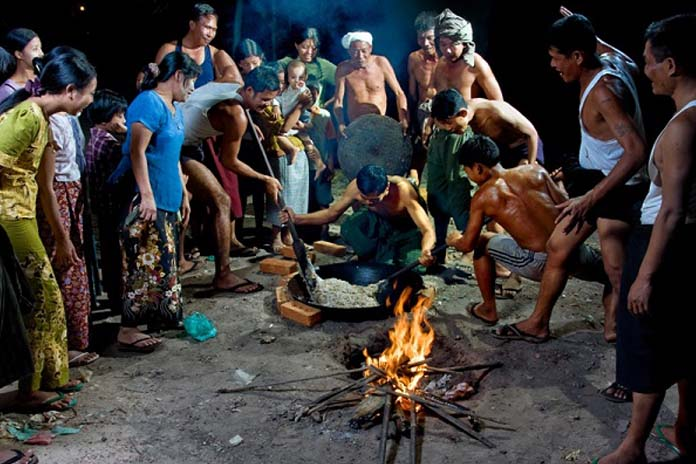
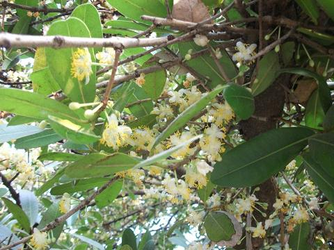

Tapoutwe(Tabo-dwe) : February
Written by Khin Myo Chit and Junior Win ( Flowers & Festivals )
11.Tapoutwe(Ta-boh-dwe)
As the season sets in,
the cotton and butea trees blossom together.
At the foot of the six-rayed pagoda.
with golden flowers and incense.
ten fingers join
raised to the forehead.
Silver mist spreads beauteously
throughout the three watches.
In abundance of light,
at the rim of the great Yugan mountain,
Regulus shines.
Tapoutwe ( Tabo-dwe )
Come Tabo-dwe(February), the eleventh month of the Myanmar calendar, the Myanmar have the harvest festival.All the products of the farm and garden are made into htamane , a concoction of glutinous rice,coconut slices, sessamum seeds, peanuts and a generous amount of cooking oil.
Among the Myanmar, there is custom which is called" top priority for these to whom respect is due".It is best illustrated today in small towns and villages where rice is cooked in earthen pots with humped lids and the cooked rice has a peaked shaped on the top. This crown of rice is reserved for offering to monks and senior relatives and the household shrine.If a Myanmar comes by a rare delicacy, he would set aside a portion,however small, for "top priorities". The rarer the food, the more care he takes to di so.
Among the agrarian people in the country it is customary to set aside the first and the choicest prodicts of the farm or garden for alms giving.Hence the tradition of htamane king b , which includes most of the fruits of the land.
Htamane feast is either celebrated communally or done in the private circle of family and friends.But with the Myanmar whose way of life includes 'extended families' it is always a fairly large gathering.The nature of the feast is such that it needs lots of helping hands.There is such a lot of work to do and there is no dearth of willing hands to help.
Even in family celebrations the harvest festival calls for a lot of people to rally round to do the chores.Girls do the winnowing of the rice grains.This is done with flat circular bamboo trays.Each girl had a tray half filled with rice grains.She holds the tray with both hands, one on each end, so that her hands stay on the two opposite points of the circular shape.This position is important, because the next movement is to toss the grains up in the air and catch them again on the tray while most of the dust and trash are blown away in the wind.Then she rolls the grains in the tray so that the trash will separate itself from the grains.This task of winnowing, therefore, calls for the highest form of virtuosity.
Since winnowing is for experts, the less talented might try their hand at shelling peanuts, They are put in a flat bamboo tray and a fairsized bottle is rolled over them to remove the husks.Then the tray is made over to the expert winnowers to do away with the husks.Since separating the husks from the seeds is not so difficult as winnowing the small rice grains, some girls might try the tossing and rolling themselves.This is good apprentice training for future expert winnowers.
Boys and men tear away the fibers of coconuts, which sometimes have to be taken down from palms soaring up to twenty to thirty feet.The bare cylindrical trunk is none too easy to climb.It is a feat that calls for dexterity, strength, and experience.It is an exciting thing to watch men with ropes and knives go up the palm, and from a precarious foot hold, tie a rope to the bunch of coconuts, before cutting with the knife.Then the bunch is slowly slid down to the ground where eager hands await to receive the prize.
Now to break open the coconuts, the first step is to tear away the fibers.The built-in defence which Mother Nature has provided for her rare delicacy does not easily yield to human hands.Not only brute strength, but also an understanding of the intricate ways the fibers are interwoven is required.
At long last the shell appers, but go slow, please. Do not spoil the shape.The shape must be perfectly halved so that the shells could be used as water cups and the kernel must be in a condition that could be sliced on the carpenter's plane leaving minimum scraps.The clear sweet milk inside is shared by the deserving workers.
Meanwhile, a giant concave iron pot is put over the fireplace, a pit dug in the ground for the purpose.With huge logs blazing fire underneath, the oil in the iron pot sizzles and shredded ginger is the first to go in, followed by glutinous rice which had been soaked in water.
A large cauldron of water boiling in another dug-out fireplace is kept ready to be added to the glutinous rice cooking in the pot.Hot water is added slowly in small portions, stirring the mixture as things go along.When the rice is soft enough and there is no water left, the pot is removed from the fire.
The glutinous rice in the pot is soft and pliant with oil oozing out.The big pot is secured with bricks and stones.Its base being humped: and two stalwart men each with a long wooden ladle, begin to stir the rice,crushing it between the ladles.Even as they stir and cursh, the rice gets stickier, so they have to use not only strength but skill to make the coagulate mass yield to the ladles.
After some time of vigorous stirring and crushing, people come round to add slice of coconut and peanuts, slowly and in small portions to make the whole thing a good mixture. By this time crushing and stirring can no longer be done two men; another pair is called in. Now two men are at the top end of the ladles while the ither two take hold of the lower ends.Those at the top end guide the movement while the two at the base exert all their strength to bring the mass of glutinous rice together between the ladles so that they are thoroughly crushed.
Sessamum seeds are added last. This last portion dies not call for strength, but it needs skill, so they say.While others are pitting their might to stir and crush and mix the glutinous rice and other ingredients, the one who' spreads the sessamum seeds' sits by, sprinkling the seeds by handfuls at regular intervals.The blend and the flavour and the taste of the (htamane) depends on the art of the sessamum seed spinkler - so it is claimed by the sessamum seed sprinkler.
"Sprinkling sessamum seeds" is a Myanmar idiom not meant , I am afraid, to describe some commendable work, but to disparage something people do only after others have done the dirty work.
Come to think of it, I am , perhaps doing the same thing.Whatever participation I have ever had in the harvest festival is my appreciation of (htamane) and the prepagation of the creed.I am sprinkling sessamum seeds, figuratively, by writing this piece. This goes to show that the pen is mightier than the giant ladles that stir and crush the (htamane).